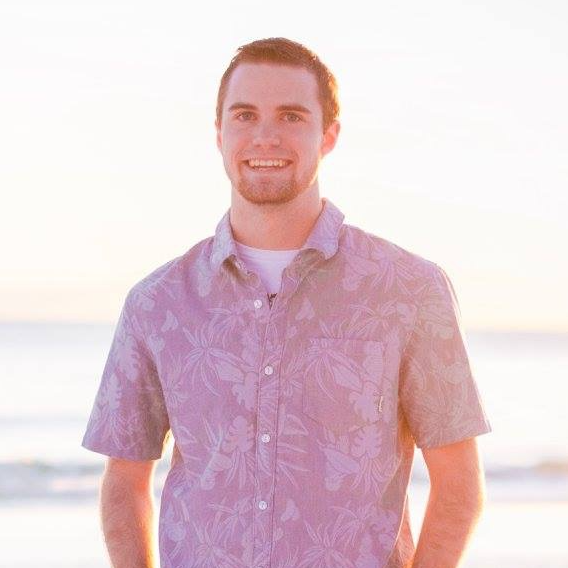

About
My name is Braden Frazer, and I'm a 22-year-old senior Computer Science major at Texas A&M University. I have a passion for all kinds of tech, and a particular focus in audio and visual that spans anywhere from designing websites and logos to running sound for a football stadium. I've always tended to be more technical than artsy, but the opportunities and classes I've come across in college have helped me push my creative side a bit more. I'll be graduating from A&M in May 2017, and I'm currently looking for a job doing the things I love that you'll find on this site. If you have any questions or interest in my work, don't hesitate to contact me through the form on my contact page!